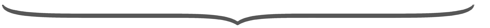
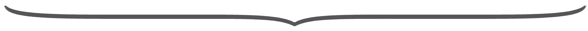

Bidirectional Loop between:
Human Signals and Trustworthy LLMs
“I turn human signals into evaluation, alignment, and adaptation for LLM-powered AI systems”
Xin Sun
13 July 2026
Specially Appointed Assistant Professor · NII, Japan
Research Concept and Motivation
Human-Centered AI
(Natural language processing, NLP &
Human-computer interaction, HCI)
Cognitive Science
(Mixed-methods empirical studies
with behavioral & physiological sensing)

Study human-centered AI in healthcare and decision-support
from bidirectional sides: how humans align AI, and how AI augments humans.
Research Concept and Motivation: Human Signals Are Not Always Ground Truth
LLMs are aligned with humans and trained on human data, however :
Humans
(Cognition and Behaviors)
LLMs
(Behaviors & Mechanism)
Human signals contain:
biases to resist · expertise to learn · human states to adapt
Research Methods: Human Signals Across the LLM Lifecycle
››› ›››Objective: Learn the right things from humans. Provide the right support to humans.
4 / 17Evaluate
before development · LLM as Judge
Can humans — and LLM-as-a-Judge — assess information reliably?
5 / 171 · Evaluate: LLM-as-a-Judge for Health Information
Research Question: whether humans and LLM-as-a-Judge can assess the information reliably?
participants
models
Human trust
HIGHER under human label
Identical content is trusted more under a human-authored label.
LLM-as-a-Judge trust
HIGHER under human label
Judges reproduce the same label heuristic on the same task.
Judge decision uncertainty
LOWER under human label · rises under AI label
Logit uncertainty rises under AI labels; self-attention densifies on the label region.
Example · one trial
Label: Human-written“Daily walking helps lower blood pressure.”
identical content — only the source label flips
→ trust rated by 40 humans & 8 LLM judges · logits & attention logged
Takeaways: LLM-as-a-Judge and Humans share similar processing patterns in both behavioral and mechanistic level.
[a] Sun et al. Label Effects: Shared Heuristic Reliance in Trust Assessment by Humans and LLM-as-a-Judge (ACL 2026) Core A*
[b] Sun et al. Understanding Trust Perception in AI-Generated Information with Behavioral and Physiological Sensing (IJHCS 2026) Top Tier JCR-1
1 · Evaluate: Beyond Behaviors - Mechanistic Evaluation for LLMs and Humans
Human Gaze-Attention
Model Self-Attention
Takeaway: both humans and LLMs over-attend to heuristic cues, rather than objectively focus on content itself.
[a] Sun et al. Label Effects (ACL 2026) Core A* — behavioral results, mechanistic analysis across LLM families
7 / 171 · Evaluate: When Trust Meets Truth in LLM-as-a-Judge
Research Question: can LLM judges keep trust scoring separate from binary truth verdicts?
Q · Do antibiotics help treat a viral cold?
Antibiotics treat bacterial infections, not viral infections such as the common cold. Rest and fluids are usually appropriate.
Scoring Judge (1–7 scale)
5.6 / 7 · HIGHER under Human source
Identical content — trust follows the source.
Binary Judge · P(Correct)
66% judged CORRECT
More CORRECT verdicts — false-accepts incorrect QA.
Takeaways: one source cue shifts trust, truth verdicts, and logit confidence together — judge outputs are not independent evidence.
Higher trust tracks higher correct-judge confidence — trust leaks into the model’s internal truth signal.
[i] Sun et al. When Trust Meets Truth: Trust–Truth Separability in LLM-as-Judge (EMNLP 2026, to appear) Core A*
8 / 17Align
during development · LLM as Learner
What should LLMs learn from human signals — and what should they not?
9 / 172 · Align: How LLMs Learn the “Bad” Human Signals
Research Question: whether LLMs carry on the “bad signals” from human annotated preferences?
Pre-train next-token prediction
SFT supervised fine-tuning
DPO preference optimization
Takeaways: LLMs can learn the bias from the explicitly annotated human preferences.
Pre-train (next-token prediction) has the least effect, SFT comes the second, and DPO can install the bias significantly.
[j] Sun et al. Installed by Preference, Not by Exposure: Heuristic Cue Biases in LLM Judges (AAAI 2026, under review) Core A*
10 / 172 · Align: Domain-Specific Benchmarks Creation
Research Question: what do expert strategies look like — as these data LLMs can learn from and be tested against?
Real Psychotherapy · EN + Dutch · every turn labeled by therapist experts / strategies
Tree-structured expert strategies
evidence-based scripts encoded as a strategy tree
Domain-specific strategy and script Engaging Evoking Planning Reflection Open Question Affirmation ▲ next strategy Elicit Change Talk Advice w/ PermissionTakeaways: the benchmark makes expert skills measurable — defining both what to evaluate in LLMs and what to align them to.
[d] Sun et al. Eliciting Motivational Interviewing Skill Codes in Psychotherapy with LLMs: A Bilingual Dataset and Analytical Study (COLING 2024) Core B
[c] Sun et al. Script-Strategy Aligned Generation (ACM CSCW 2025) Core A
2 · Align: Supervise Models with Domain Expertise, Not Simply Imitate
Research Question: align LLM to domain-specific expertise and strategies, not only raw human imitation.
1 · Encoding Representstrategy tree
Encode evidence-based therapeutic expert strategies in tree-structures.
2 · LLM ReasoningCoT → next strategy
Predict the next expert strategy via chain-of-thought — an interpretable intermediate control.
3 · LLM Generateconditioned · controllable
Condition the response generation on the predicted strategy.
Takeaways: stepwise LLM reasoning and generation preserves structured domain expertise while suppressing risky imitation.
[c] Sun et al. Script-Strategy Aligned Generation (ACM CSCW 2025) Core A
[e] Sun et al. Rethinking the Alignment of Psychotherapy Dialogue Generation (COLING 2025) Core B
2 · Align: Multi-Agent Therapeutic Dialogue Generation
Research Question: expert data is scarce — can LLM agents generate it, with domain-specific strategies under control?
① Client profile
↓ grounded into a situational story
“Mia, 34, wants to cut down on drinking, but evenings after work feel impossible …”
coordinates both agents · sets each turn’s strategy
Agent
Agent
② Multi-agent simulation · coded turn by turn
③ Dialogues & evaluation
- lexical quality
- domain-strategy adherence
- LLM-judge + expert review
Takeaways: agentic simulation with macro-level strategy control turns scarce expert data into steerable, clinically-plausible alignment supervision at scale.
[j] Sun, et al. StoryMI: Steerable Multi-Agent Therapeutic Dialogue Generation. co-authored (ACL 2026)
13 / 17Adapt
after development · LLM as Partner
How should LLMs respond to each human — in real time?
14 / 173 · Adapt: Sense & Predict Human States in Real Time
Research Question: How LLMs can adapt to humans during the real-time interaction?
① Sense · user behavior + physiological signals
Behavior — gaze scanpath & interaction traces
Physiology — ECG & EDA
② Predict · latent human states
predicted trust vs. ground truth · regression MSE 0.23
Takeaways: behavioral (gaze, interaction traces) and physiological (ECG / EDA) signals can model the user’s latent states — cognitive load, trust, confidence — in real time.
[b] Sun et al. Understanding Trust Perception in AI-Generated Information with Behavioral and Physiological Sensing (IJHCS 2026) Top Tier JCR-1
[g] Sun et al. Eyes Can’t Always Tell (ACM UMAP 2026) Core A
3 · Adapt: Adaptive Support that Augments Humans
Goal: adapt explanation, information, timing, and modality — to augment human cognition & behavior
How to AdaptExplanation
depth of reasoning to show
Information
how much to process at once
Timing & guidance
when — and how directively — to support
Modality
text · speech · embodied agent
Takeaways: adapting explanation, information load, timing, and modality to sensed states augments human cognition & behavior — appropriate reliance, calibrated trust, better decisions.
[f] Sun et al. Seeing the Reasoning (ACM CHI 2026) Core A*
[h] Sun et al. Interface Matters: Exploring Trust Perception in Health Information from Large Language Models via Text, Speech, and Embodiment (ACM CSCW 2024) Core A
Vision: Toward Human-Grounded, Reliable and Trustworthy LLM-powered AI Systems
Not all human signals should be learned:
evaluate bidirectional — then align selectively
Not all LLM outputs should be relied on:
validate the human signals before they supervise models
Not all needs should be equally supported:
adapt to sensed human states to support reliably and personally

Learn the right things from humans. Provide the right support to humans.
17 / 17
Thank you so much
for your time and patience!